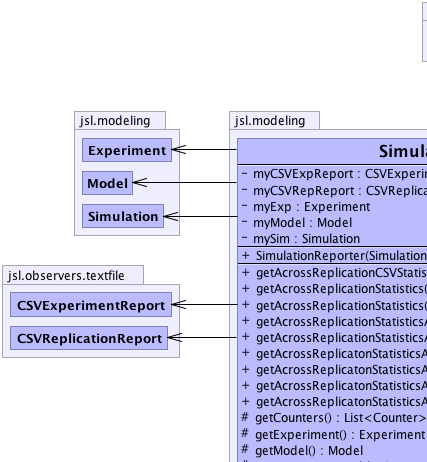
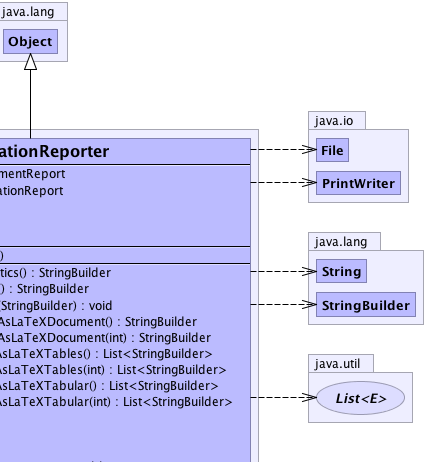
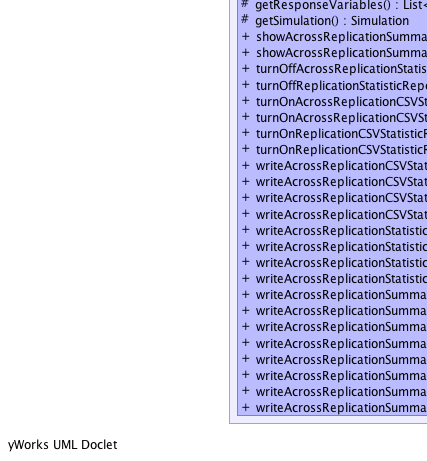
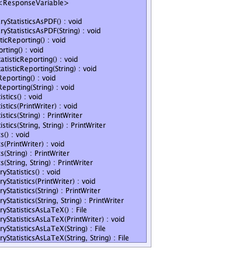

jsl.modeling.SimulationReporter
jsl.modeling.SimulationReporter
|
||||||||||
| PREV CLASS NEXT CLASS | FRAMES NO FRAMES | |||||||||
| SUMMARY: NESTED | FIELD | CONSTR | METHOD | DETAIL: FIELD | CONSTR | METHOD | |||||||||
java.lang.Object
public class SimulationReporter
This class facilitates simulation output reporting. There are two main reporting functions: within replication statistics and across replication statistics. To collect within replication statistics you must use turnOnReplicationCSVStatisticalReporting() before running the simulation. This needs to be done before the simulation is run because the statistics are collected after each replication is completed. This method attaches a CSVReplicationReport to the model for collection purposes. If the simulation is run multiple times, then statistical data continues to be observed by the CSVReplicationReport. Thus, data across many experiments can be captured in this manner. This produces a comma separated value file containing all end of replication statistical summaries for every counter and response variable in the model. There are a number of options available if you want to capture across replication statistics. 1) turnOnAcrossReplicationCSVStatisticReporting() - This should be done before running the simulation. It uses a CSVExperimentReport to observe a model. This produces a comma separated value file containing all across replication statistical summaries for every counter and response variable in the model. 2) Use any of the writeAcrossReplicationX() methods. These methods will write across replication summary statistics to files, standard output, LaTeX, CSV, etc.
|  |  |
|  |  |
| Field Summary | |
|---|---|
private CSVExperimentReport |
myCSVExpReport
|
private CSVReplicationReport |
myCSVRepReport
|
private Experiment |
myExp
|
private Model |
myModel
|
private Simulation |
mySim
|
| Constructor Summary | |
|---|---|
SimulationReporter(Simulation sim)
|
|
| Method Summary | |
|---|---|
java.lang.StringBuilder |
getAcrossReplicationCSVStatistics()
Uses a StringBuilder to hold the across replication statistics formatted as a comma separated values with an appropriate header |
java.lang.StringBuilder |
getAcrossReplicationStatistics()
Returns a StringBuilder with across replication statistics |
void |
getAcrossReplicationStatistics(java.lang.StringBuilder sb)
Fills the StringBuilder with across replication statistics |
java.lang.StringBuilder |
getAcrossReplicationStatisticsAsLaTeXDocument()
Returns a StringBuilder representation of the across replication statistics as a LaTeX document with max number of rows = 60 |
java.lang.StringBuilder |
getAcrossReplicationStatisticsAsLaTeXDocument(int maxRows)
Returns a StringBuilder representation of the across replication statistics as a LaTeX document |
java.util.List<java.lang.StringBuilder> |
getAcrossReplicatonStatisticsAsLaTeXTables()
List of StringBuilder representing LaTeX tables max 60 rows |
java.util.List<java.lang.StringBuilder> |
getAcrossReplicatonStatisticsAsLaTeXTables(int maxRows)
List of StringBuilder representing LaTeX tables |
java.util.List<java.lang.StringBuilder> |
getAcrossReplicatonStatisticsAsLaTeXTabular()
Gets shortened across replication statistics for response variables as a LaTeX tabular. |
java.util.List<java.lang.StringBuilder> |
getAcrossReplicatonStatisticsAsLaTeXTabular(int maxRows)
Gets shortened across replication statistics for response variables as a LaTeX tabular. |
protected java.util.List<Counter> |
getCounters()
A convenience method for sub-classes. |
protected Experiment |
getExperiment()
|
protected Model |
getModel()
|
protected java.util.List<ResponseVariable> |
getResponseVariables()
A convenience method for sub-classes. |
protected Simulation |
getSimulation()
|
void |
showAcrossReplicationSummaryStatisticsAsPDF()
This method depends on having pdflatex installed in /usr/texbin/pdflatex A pdf viewer must also be installed. |
void |
showAcrossReplicationSummaryStatisticsAsPDF(java.lang.String pdfcmd)
This method depends on pdfcmd representing a valid system command to create a pdf from a latex file A pdf viewer must also be installed. |
void |
turnOffAcrossReplicationStatisticReporting()
Detaches a CSVExperimentReport from the model |
void |
turnOffReplicationStatisticReporting()
Detaches a CSVReplicationReport from the model |
void |
turnOnAcrossReplicationCSVStatisticReporting()
Attaches a CSVExperimentReport to the model to record across replication statistics to a file |
void |
turnOnAcrossReplicationCSVStatisticReporting(java.lang.String name)
Attaches a CSVExperimentReport to the model to record across replication statistics to a file |
void |
turnOnReplicationCSVStatisticReporting()
Attaches a CSVReplicationReport to the model to record within replication statistics to a file |
void |
turnOnReplicationCSVStatisticReporting(java.lang.String name)
Attaches a CSVReplicationReport to the model to record within replication statistics to a file |
void |
writeAcrossReplicationCSVStatistics()
Writes the across replication statistics as comma separated values to System.out |
void |
writeAcrossReplicationCSVStatistics(java.io.PrintWriter out)
Writes the across replication statistics to the supplied PrintWriter as comma separated value output |
java.io.PrintWriter |
writeAcrossReplicationCSVStatistics(java.lang.String fName)
Creates a PrintWriter with the supplied name in directory jslOutput and writes out the across replication statistics |
java.io.PrintWriter |
writeAcrossReplicationCSVStatistics(java.lang.String directory,
java.lang.String fName)
Creates a PrintWriter with the supplied name in directory jslOutput and writes out the across replication statistics |
void |
writeAcrossReplicationStatistics()
Writes the across replication statistics as text values to System.out |
void |
writeAcrossReplicationStatistics(java.io.PrintWriter out)
Writes the across replication statistics to the supplied PrintWriter as text output |
java.io.PrintWriter |
writeAcrossReplicationStatistics(java.lang.String fName)
Creates a PrintWriter with the supplied name in directory jslOutput and writes out the across replication statistics |
java.io.PrintWriter |
writeAcrossReplicationStatistics(java.lang.String directory,
java.lang.String fName)
Creates a PrintWriter with the supplied name in directory within jslOutput and writes out the across replication statistics |
void |
writeAcrossReplicationSummaryStatistics()
Writes the across replication statistics as text values to System.out |
void |
writeAcrossReplicationSummaryStatistics(java.io.PrintWriter out)
Writes shortened across replication statistics to the supplied PrintWriter as text output Response Name Average Std. |
java.io.PrintWriter |
writeAcrossReplicationSummaryStatistics(java.lang.String fName)
Creates a PrintWriter with the supplied name in directory jslOutput and writes out the across replication statistics |
java.io.PrintWriter |
writeAcrossReplicationSummaryStatistics(java.lang.String directory,
java.lang.String fName)
Creates a PrintWriter with the supplied name in directory within jslOutput and writes out the across replication statistics |
java.io.File |
writeAcrossReplicationSummaryStatisticsAsLaTeX()
Creates a PrintWriter with the supplied name in directory jslOutput and writes out the across replication statistics |
void |
writeAcrossReplicationSummaryStatisticsAsLaTeX(java.io.PrintWriter out)
Writes shortened across replication statistics to the supplied PrintWriter as text output in LaTeX document form Response Name Average Std. |
java.io.File |
writeAcrossReplicationSummaryStatisticsAsLaTeX(java.lang.String fName)
Creates a PrintWriter with the supplied name in directory jslOutput and writes out the across replication statistics |
java.io.File |
writeAcrossReplicationSummaryStatisticsAsLaTeX(java.lang.String directory,
java.lang.String fName)
Creates a PrintWriter with the supplied name in directory within jslOutput and writes out the across replication statistics as a LaTeX file |
| Methods inherited from class java.lang.Object |
|---|
clone, equals, finalize, getClass, hashCode, notify, notifyAll, toString, wait, wait, wait |
| Field Detail |
|---|
private Simulation mySim
private Model myModel
private Experiment myExp
private CSVReplicationReport myCSVRepReport
private CSVExperimentReport myCSVExpReport
| Constructor Detail |
|---|
public SimulationReporter(Simulation sim)
| Method Detail |
|---|
protected final Simulation getSimulation()
protected final Model getModel()
protected final Experiment getExperiment()
protected final java.util.List<ResponseVariable> getResponseVariables()
protected final java.util.List<Counter> getCounters()
public java.lang.StringBuilder getAcrossReplicationCSVStatistics()
public final void writeAcrossReplicationCSVStatistics(java.io.PrintWriter out)
out - public final void writeAcrossReplicationStatistics(java.io.PrintWriter out)
out - public final void writeAcrossReplicationSummaryStatistics(java.io.PrintWriter out)
out - public final java.lang.StringBuilder getAcrossReplicationStatistics()
public final void getAcrossReplicationStatistics(java.lang.StringBuilder sb)
sb - public final void writeAcrossReplicationCSVStatistics()
public final java.io.PrintWriter writeAcrossReplicationCSVStatistics(java.lang.String directory,
java.lang.String fName)
directory - fName -
public final java.io.PrintWriter writeAcrossReplicationCSVStatistics(java.lang.String fName)
fName -
public final java.io.PrintWriter writeAcrossReplicationStatistics(java.lang.String directory,
java.lang.String fName)
directory - fName -
public final java.io.PrintWriter writeAcrossReplicationStatistics(java.lang.String fName)
fName -
public final void writeAcrossReplicationStatistics()
public final void writeAcrossReplicationSummaryStatistics()
public final java.io.PrintWriter writeAcrossReplicationSummaryStatistics(java.lang.String directory,
java.lang.String fName)
directory - fName -
public final java.io.PrintWriter writeAcrossReplicationSummaryStatistics(java.lang.String fName)
fName -
public final void turnOnReplicationCSVStatisticReporting()
public final void turnOnReplicationCSVStatisticReporting(java.lang.String name)
name - public final void turnOffReplicationStatisticReporting()
public final void writeAcrossReplicationSummaryStatisticsAsLaTeX(java.io.PrintWriter out)
out -
public final java.io.File writeAcrossReplicationSummaryStatisticsAsLaTeX(java.lang.String directory,
java.lang.String fName)
directory - fName -
public final java.io.File writeAcrossReplicationSummaryStatisticsAsLaTeX(java.lang.String fName)
fName -
public final java.io.File writeAcrossReplicationSummaryStatisticsAsLaTeX()
public final void showAcrossReplicationSummaryStatisticsAsPDF()
public final void showAcrossReplicationSummaryStatisticsAsPDF(java.lang.String pdfcmd)
pdfcmd - public final java.util.List<java.lang.StringBuilder> getAcrossReplicatonStatisticsAsLaTeXTables()
public final java.util.List<java.lang.StringBuilder> getAcrossReplicatonStatisticsAsLaTeXTables(int maxRows)
maxRows -
public final java.lang.StringBuilder getAcrossReplicationStatisticsAsLaTeXDocument()
public final java.lang.StringBuilder getAcrossReplicationStatisticsAsLaTeXDocument(int maxRows)
maxRows - maximum number of rows in each table
public final java.util.List<java.lang.StringBuilder> getAcrossReplicatonStatisticsAsLaTeXTabular()
public final java.util.List<java.lang.StringBuilder> getAcrossReplicatonStatisticsAsLaTeXTabular(int maxRows)
maxRows - maximum number of rows in each tabular
public final void turnOnAcrossReplicationCSVStatisticReporting()
public final void turnOnAcrossReplicationCSVStatisticReporting(java.lang.String name)
name - public final void turnOffAcrossReplicationStatisticReporting()
|
||||||||||
| PREV CLASS NEXT CLASS | FRAMES NO FRAMES | |||||||||
| SUMMARY: NESTED | FIELD | CONSTR | METHOD | DETAIL: FIELD | CONSTR | METHOD | |||||||||